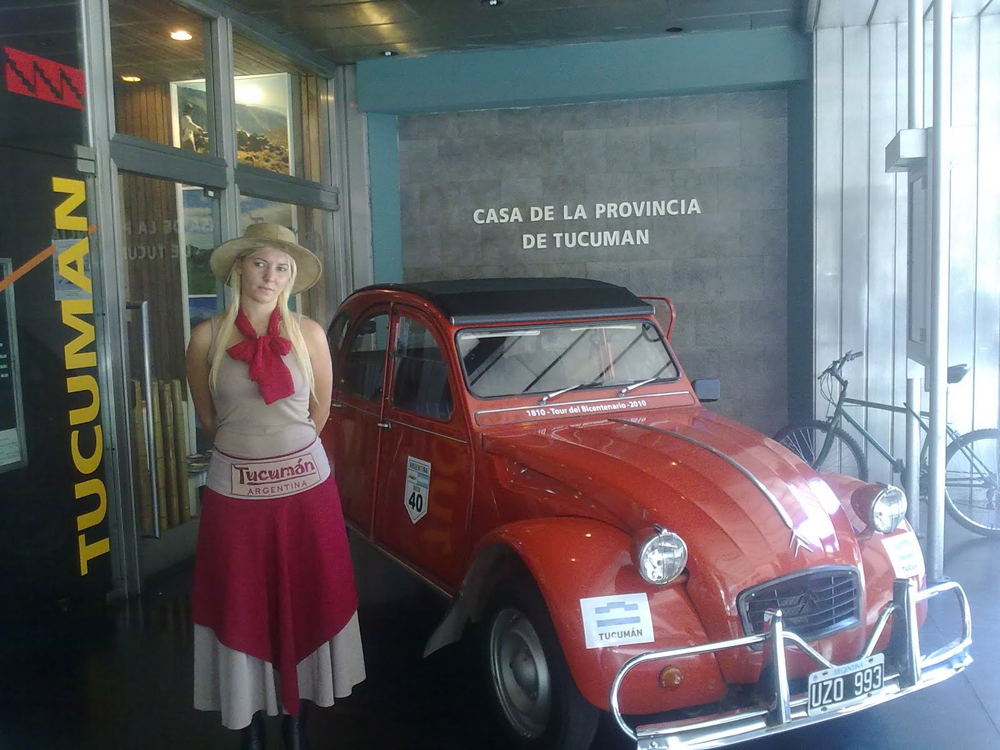
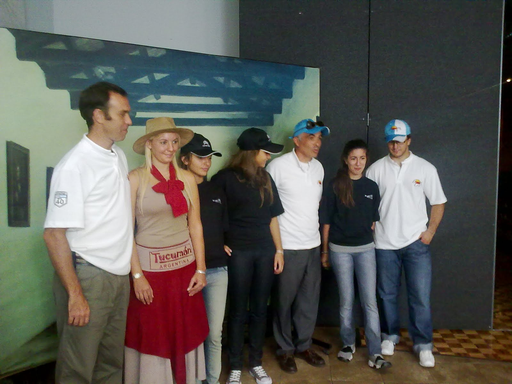
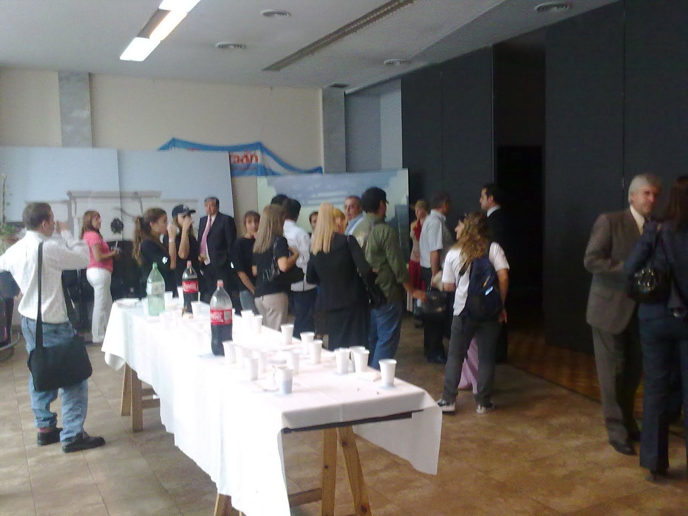

En el día de hoy se llevó a cabo la conferencia de prensa en la Casa de la Provincia de Tucuman.
En la misma Jose Izquierdo y Martin Franzosi explicaron las diferentes circunstancias que signaron la experiencia 3CV en
la región Norte de la Ruta 40 y cuales son las expectativas puestas para la etapa que nos espera.
Obviamente todo el equipo estuvo presente para hacer el aguante a nuestros dos representantes.

"El Principito" daba la recepción en la puerta, acompañado por una preciosa promotora vestida para la ocasión. Tambien contamos con "Las Chicas de Citroën", algunos familiares y amigos.
La convocatoria fue levantada por numerosos periodistas de diferentes tipos de medios. Y ademas, al momento de escribir la presente José y Martín se encuentran en los estudios de Radio Palermo 94.7 Mhz, en el Programa Compartiendo que se especializa en diferentes

temáticas del turismo.
Al finalizar el evento se compartió un lunch con los diferentes medios, los cuales hicieron también entrevistas y sesiones fotográficas.
A todos estos se les repartió folleteria y una gacetilla de prensa explicativa y que esta a disposición en este blog.
BUENÍSIMO EL PROYECTO !!!!
LES DESEAMOS ÉXITOS Y QUE LO DISFRUTEN AL MÁXIMO. Huguito Rama y flia.